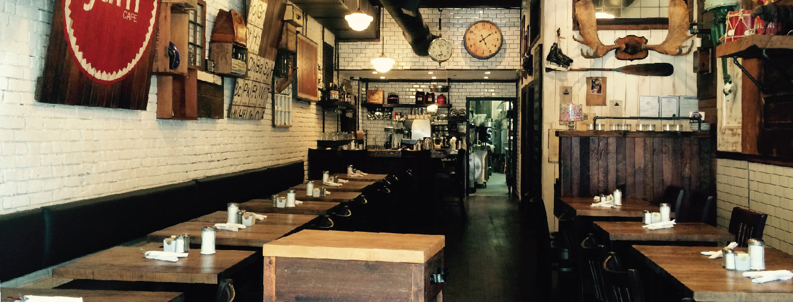
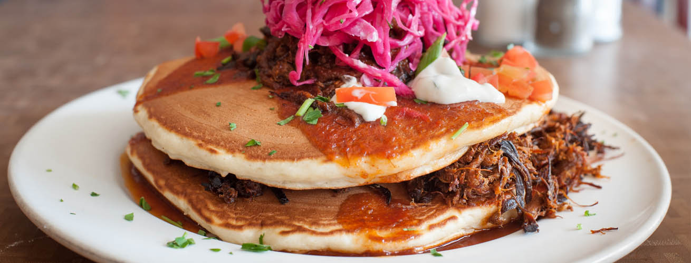
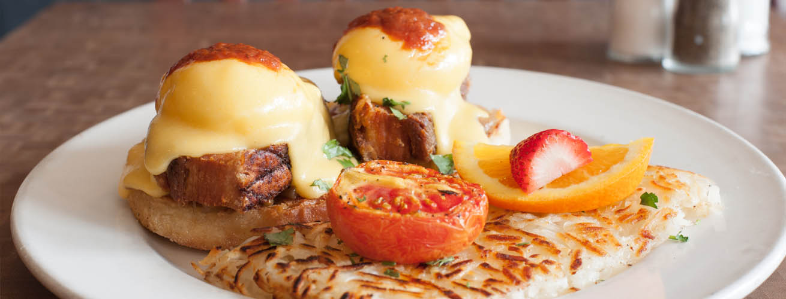

An Exploration of Vancouver Eats
Breakfast for Lunch?

Jam Cafe was breed in Victoria, B.C. by the owners of Union Pacific Coffee. This Canadian born restaurant offers homemade rustic breakfast fare that feeds all the senses. As you walk in the restaurant, the ambiance gives a feeling of coming home to your own personal country-style vacation home.

Ordering at Jam Cafe is an art form. From breakfast classics like pancakes to fairytale delights such as Green Eggs and Ham, there’s no lack of imagination in their dishes. The pancakes are the perfect texture. The first bite a soft, fluffy cloud of batter and sweet maple syrup made in house. They recommend ordering a few of their dishes to share so that everyone will have a chance to try their signature dishes.

Although Jam Cafe is known for serving all day breakfast, they also offer a full range lunch menu. Their signature dish for lunch is The Reuben. The succulent corned beef falls off the marble rye bread while the sauerkraut offers the perfect amount of saltiness to the dish. This is definitely a must try!
You can visit their website here.